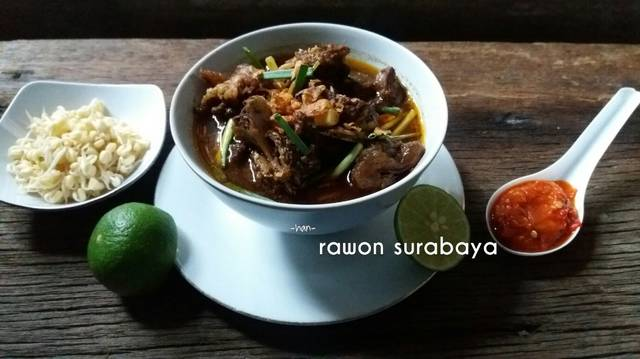

Rawon Surabaya

250 gr Daging Sapi potong dadu
250 gr Iga/tulang sapi
10 batang Daun bawang kecil
1 batang Sereh, geprek
1 jempol Lengkuas, geprek
2 lbr Daun jeruk, sobek-sobek
1 sachet Kaldu bubuk sapi
1/2 sdm Garam/sesuai selera
1 sdt Gula merah iris
1200 ml Air
Minyak untuk menumis secukupnya
5 buah Kluwek yang bagus /tidak pahit
7 buah Bawang merah
2 buah Bawang putih
3 buah Cabe merah rendam air sampai lunak
1 bks Asam jawa
1/4 sdt Terasi bakar
4 butir kemiri
2 cm Jahe
2-3 cm Kunyit
1-2 cm Kencur
1/2 sdt Lada bubuk
1 sdt Ketumbar bubuk
Secubit jintan
Sambal terasi
- 2 buah Cabe merah /merah keriting
- 7 buah Cabe rawit
- 1 buah Tomat kecil
- 1/2 sdt Gula merah
- 1/2 sdt Garam
Pelengkap
- Bawang goreng
- Kecambah pendek
- Tempe goreng/telur asin
- Krupuk udang
Bumbu:
- 2 genggam kacang goreng
- 1 sdm petis udang
- 1/2-1 sdm gula merah sisir/ gula pasir(sesuai selera)
- 2-3 mata asam kandis atau 1 sdm cuka
- 1 buah klutuk/ pisang batu, rajang
- Cabe rawit sesuai selera
- Garam secukupnya
- Air mateng
Langkah-langkah pembuatan:
Rendam kluwek dengan air panas. Sisihkan.
Potong-potong daun bawang kira-kira 3 cm panjangnya.
Siapkan bahan-bahan bumbu dan rempah geprek.
Haluskan/blender semua bahan bumbu (termasuk air dari rendaman kluwek).
Panaskan wajan tanpa minyak. Masukkan bumbu. Masak sampai kandungan airnya benar-benar habis. Tuang minyak goreng, tumis seperti biasa, masukkan juga daun jeruk, sereh, dan lengkuas sampai bumbu matang.
Masukkan daging dan tulang ke dalam tumisan bumbu, masukkan kaldu bubuk dan gula merah. Aduk-aduk sampai daging bumbunya meresap juga ke daging, dan daging berwarna gelap/hitam.
Didihkan air, masukkan daging dan semua bumbunya. Bubuhi garam. Masak sampai daging empuk. (Tambahkan air jika daging belum empuk, pokoknya hasil akhir kuahnya tetap 1200 ml).
Menjelang diangkat, taburi daun bawang kecil. Matikan api kompor.
Untuk membuat sambal terasi mulai potong-potong cabe merah/cabe keriting. Rebus cabe merah, cabe rawit, tomat sampai matang dan lembut. Tiriskan, dan uleg bersama garam, gula merah dan terasi.
Dan Voila.. rawon pun siap dicicipi.